BEYER（ベイヤー）
ヘッドフォン、マイク等を得意とするドイツの音響機器メーカー。現行商品でもあるDT-48は世界で最初に発売されたダイナミック型ヘッドフォンとされている。日本での代理店は、1973年頃は「長瀬産業」、その後「報映産業」が務め、「松田通商」を経て、現在の代理店TASCAM（ティアック）の取扱になった。さらに2018年11月に一部機種の代理店は、TASCAMからサウンドハウスに移っている。
日本でのヘッドフォンブランドとしては、業務用途向け、あるいは映像関連を主力との代理店が扱っていた為か、オーディオ誌のテスト等にもあまり登場せず、詳細が不明な部分が多い。（＊1）
また、その製品グループは「DT」で始まる型番であるが、同一型番の製品がラインナップ上で消えたり復活したりしている。（＊2）
＊1 現在でも主力製品の一翼を担うDT-880は1980年の発売だが、80年代のオーディオ誌のヘッドフォン特集には一度しか登場していない。また1985年に発売されたとされているDT-990、DT-770は国内版のカタログにも掲載されているが、当時のStereo Sound YEAR BOOKには記載されていない。そのため型番はわかるが日本に輸入されたかどうかわからない製品（例 DT-511など）が相当あり、発売時期・販売終了時期も不明な点が多い。
＊2 最初に「音楽鑑賞用」として導入されたのはDT-440だが、近年のDT440と連続性があるかは大いに疑問がある。逆にDT990は現在の製品と連続性が感じられるが、DT911、ＤＴ931が販売された時期が存在する。
BEYER（ベイヤー）の製品を以下のように分類する。（この分類は個人的な意見で、メーカーの分類ではありません）
なお「Stereo
Sound YEAR BOOK」等で記載があるものを除き、販売期間についてのデータは不明な点が多いことをご了承ください。
�T.業務用モデル
録音モニター等業務用機材として輸入されたモデル。DT-48は代理店が一緒だったナグラのテープレコーダー等とセットで紹介されることが多かった。DT-100、480はスタジオでのモニター機種。
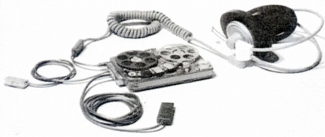
（詳細不明の機種 DT-96 ナグラのSNとのショット なおヘッドフォンが巨大なのではなく、オープンデッキのほうがコンパクトなのである。）
（代理店；長瀬産業時代） DT-48 DT-100(73年版） DT-480(73年版）
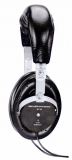
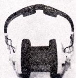
（左 DT-48 右 DT-100)
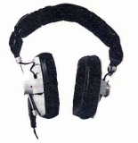
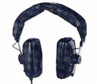
（左 DT-100 右 DT-480)
�U.鑑賞用モデル
�@初期のモデル
業務用モデルのみだったベイヤーに初めて観賞用として登場したのが初代DT-440である。カプセルのデザインは時代を感じさせるが、ヘッドバンドのデザインは現行のDT-770PROなどに近い。DT-880は磁石にネオジウムを使用していないバージョンで、後に770や990が登場した時には、現行モデルとちがい、周波数帯域で差がでていた。
（代理店；報映産業時代） DT-440 DT-880 （コンデンサー型） ET-1000
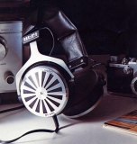
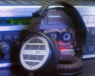
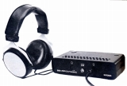
（左 DT-440 中央 DT-880 右 ET-1000)（番外） LKH-9
初期のモデルまでで紹介したモデルを除き「Stereo Sound YEAR BOOK」では新規モデルが紹介されない状態が1989年まで続き、1990年版以降はブランドとしても登場しなくなった。これ以降はカタログ等による資料からの記載の機種となる。
�A1980年代後半のモデル
DT-880以降のモデルが、いつ日本に導入されたか、そしていつまで販売されたかはわからない。現時点で判明したのは「無線と実験」誌に1987年にDT-990,770の紹介記事があったことぐらいである。DT-770、990はカプセルのデザインは現行のPROモデルとほぼ同じだが、ヘットバンドのデザインが違う。DT-330mk�U、550はDT-880のデザインの流れをくむモデル。DT-220はDT-440やET-1000と同じデザインのヘッドバンドを使用しているので、モデルの本国では以前から販売されていたのかもしれない。DT-320mk�U、325はポータブル環境での使用を目的としたモデル。
（代理店；報映産業 カタログ、1980年代末？） DT-330mk�U DT-550 DT-770 DT-990 （その他 DT-48、DT-880が記載）
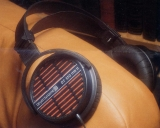
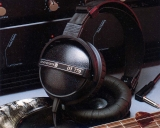
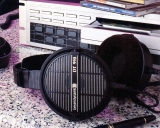
（左 DT-330mk�U 中央 DT-770 右 DT-990)
（代理店；松田通商 カタログ、1990年代初頭？） DT-220 DT-320mk�U DT-325 DT-880Studio （その他 DT-880が記載）
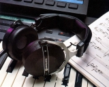
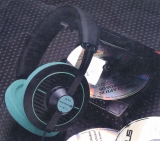
（左 DT-220 右 DT-325)
�B1990年代中盤のモデル
1993年頃のオーディオアクセサリー誌にDT-911、811、311などの広告が掲載され、DT-911が一度ヘッドフォン関連のテストに登場している。なおDT-911の広告では511、801、901などの型番があり、また現行カタログの交換イヤパッドの対応機種にものっているが、それらが輸入されていたかは不明。
（代理店；松田通商 オーディオアクセサリー アクセサリー大全98など） DT-311 DT-811 DT-911
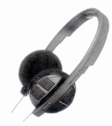
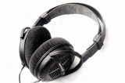
（左 DT-311 右 DT-911)�C1990年代後半のモデル
1998年のオーディオアクセサリー誌にDT-931、831、331などの広告が掲載され、レコーディング＆PA機器2000-2001にDT-250などが掲載されている。
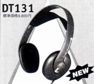
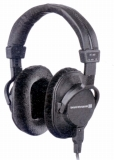
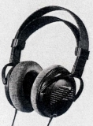
（左 DT-131 中央 DT-250 右 DT-931)